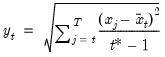
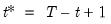
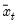
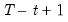
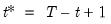
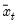
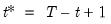
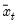
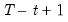
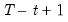

@cumbstdev Cumulative Statistics Backward cumulative standard deviations (d.f. adjusted) of a series. Equivalent to @cumbstdevs. Decreasing sample calculation of the square root of the sample (d.f. adjusted) Pearson product moment variance. Syntax: @cumbstdev(x, [s]) x: series s: (optional) sample string or object Return: series The sample standard deviation is calculated for each observation as:  where is the last period of the cumulative process, , and  is the mean of over the last  observations. Examples show @cumbstdev(x) generates a linked series of the backward cumulative sample standard deviations of the series x. Cross-references See also @cumbstdevs, @cumbstdevp, @cumbvar, @cumbvarp, and @cumbvars. For the forward variant of this function, see @cumstdev.


 as:
as: is the last period of the cumulative process, , and  is the mean of
is the last period of the cumulative process, , and  is the mean of  over the last  observations.
over the last  observations.